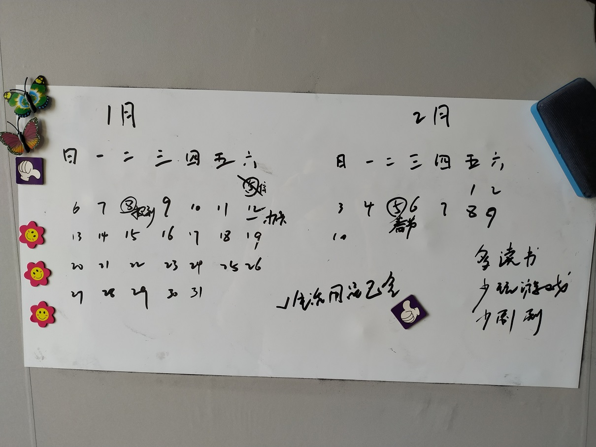
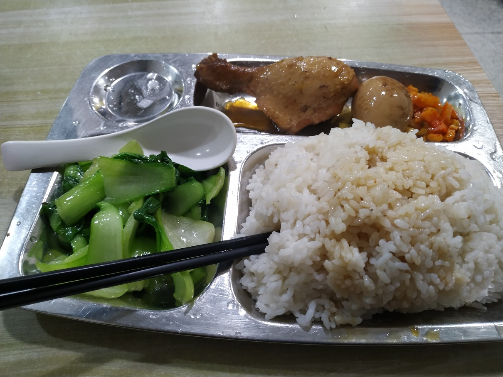
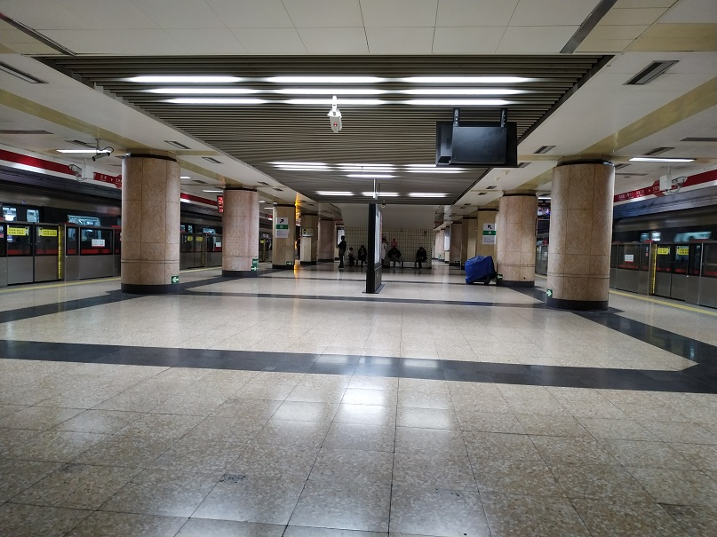
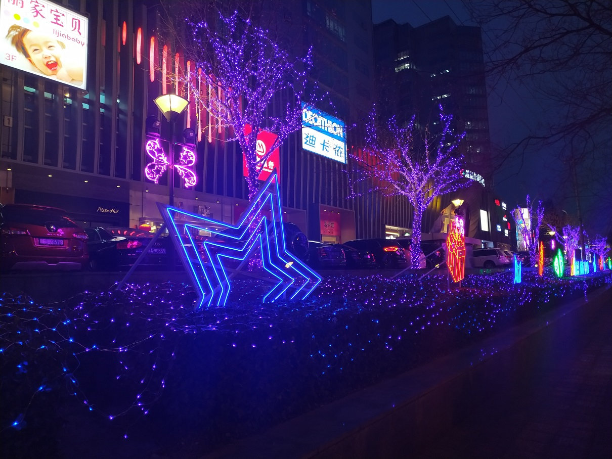
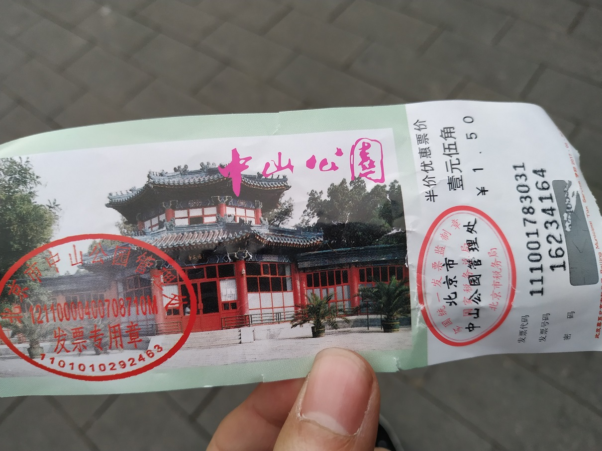
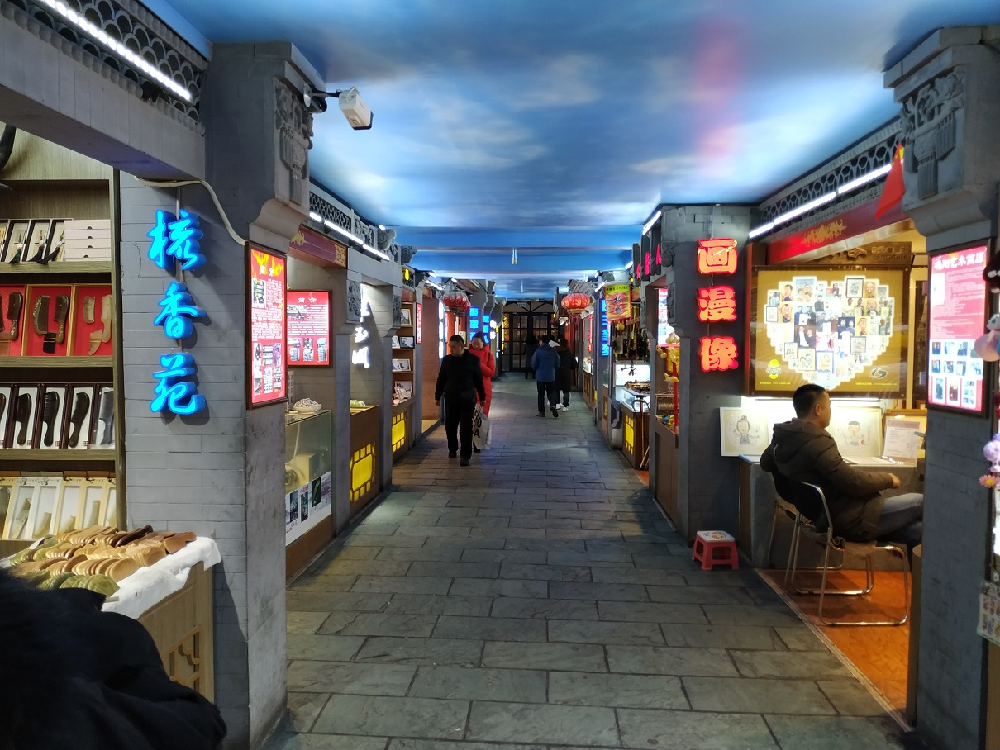
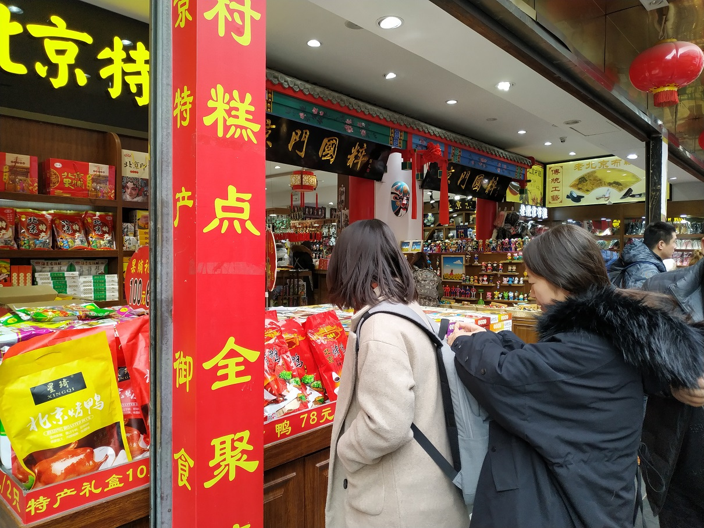

First time in Beijing, there are many novel experiences. This also means that a truly independent life has begun.
Started looking for a place to live over half a month ago, knowing little about the complexities of the rental market. Generally, rental properties fall into three categories: through agents, apartments, and direct rentals from landlords.
Most people suggest avoiding agents when renting, as websites like 58.com are flooded with agent listings. Confirmed personally that apps like Mushroom Renting and Beike Renting are indeed dominated by agents. Agents charge a fee equivalent to half or a full month’s rent and often find reasons to deduct from the deposit upon move-out. Agents admit they must deduct part of the deposit to avoid being scolded. Although agents act as intermediaries, you still sign the contract with the landlord. Therefore, during the contract signing, ensure the landlord is genuine and not a sub-landlord or agent.
Apartments are similar to agents but are more “official,” like 8090 Apartments, Ziroom, and Danke. They do not charge an agent fee but have an annual service fee of 8-10% of the annual rent (equivalent to a month’s rent). In the end, it doesn’t cost less than small agents. However, branded apartments usually have uniform decorations, not great but acceptable. Considering fees, agents charge an extra month’s rent as a service fee, and deposits are often not refunded, meaning you effectively pay five months’ rent for three months. Assuming a rent of 2000/month, it effectively becomes 3333/month, far exceeding expectations.
Direct rentals from landlords can be found on the Find Roommates for Co-renting mini-program, Douban groups, and supposedly the ZhuDuoduo app. Although the listings are fewer, they are genuine.
I was quite lucky to contact a very nice graduate student from Central University of Finance and Economics. For the first two months, the place was subleased to me without a deposit or additional fees. The landlord is a teacher at Beijing Normal University, quite reliable and not prone to arbitrary charges. The other roommates include graduates from Beijing Normal University and previously from Peking University… Overall, the environment is nice and cost-effective (grateful to the graduate student).
After moving in, I noticed the lack of some daily necessities, really feeling the start of living alone. Fortunately, the nearby supermarkets are very convenient—this is Beijing.
Prices in Beijing are not as scary as imagined. A meal at the small restaurant downstairs costs around ¥15-20, which is not expensive considering a meal in our small 18th-tier county costs ¥10-12, and in Taiyuan it costs ¥12-16.
Any subway station can issue a city transportation card. In Taiyuan, the card issuance office closes promptly at 6:30 PM, requires an ID card, and only accepts bank card payments via POS machine, taking over 10 minutes. In Beijing, it’s much easier to get a card. I went around 7:30 PM, and there were still staff present. The staff was polite, and I handed over a pile of small change. Within a minute, I had my card without any complicated steps.
Curious about how the subway works after getting the card, I followed others by swiping the card at the entrance. After observing for a while, I noticed that passengers get on the subway directly without swiping their cards again. I finally figured out that the card is swiped when exiting the station, deducting ¥3.
Every time I go out, I remind myself to bring my keys, glasses, and money, deepening the feeling of living independently.
The first day I arrived, I stayed at a ¥100/day hotel with poor conditions. When renting, I also saw some cheaper shared accommodations with conditions not much better than the ¥100 hotel. Shared living can be troublesome, especially if one person suddenly decides to leave.
A classmate happened to be in Beijing for training for a few days. We talked on the phone, but probably won’t have the chance to meet. Still, it’s comforting not to feel too lonely. For someone like me, being alone is quite fine.
At the beginning of the year, I placed something important in my plans. I initially thought of three ways to achieve it, but one has almost failed—such is reality. However, constantly adjusting and planning life amidst changes is one of life’s pleasures.
Went out the day before starting my job. First stopped at Wangfujing to check out the snack street, then wandered near Tiananmen Square. Unfortunately, all the attractions were closed on Monday, so I visited Zhongshan Park instead, with a ¥3 entrance fee (laugh/cry).
After leaving the park, I returned to Wangfujing. The snack street under the lights was beautiful.
In this unfamiliar environment of Beijing, having such an opportunity by chance makes me feel special. Perhaps being with someone brings happiness, or seeing familiar faces eases anxiety. In a daze, it feels like I’m not alone; life still holds many hopes. This has given a good start to my 2019. Should I thank heaven or…
